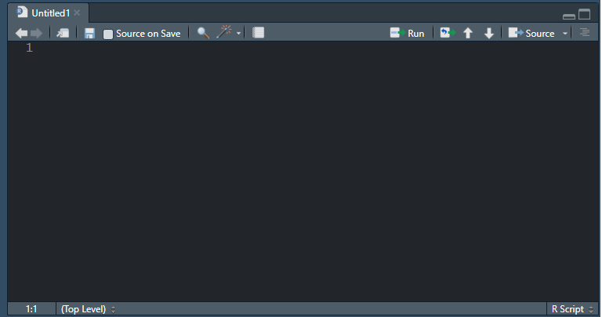
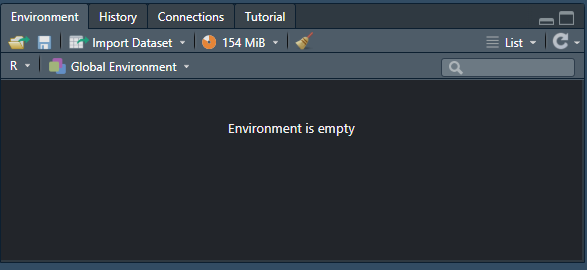
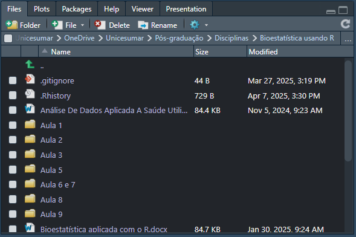
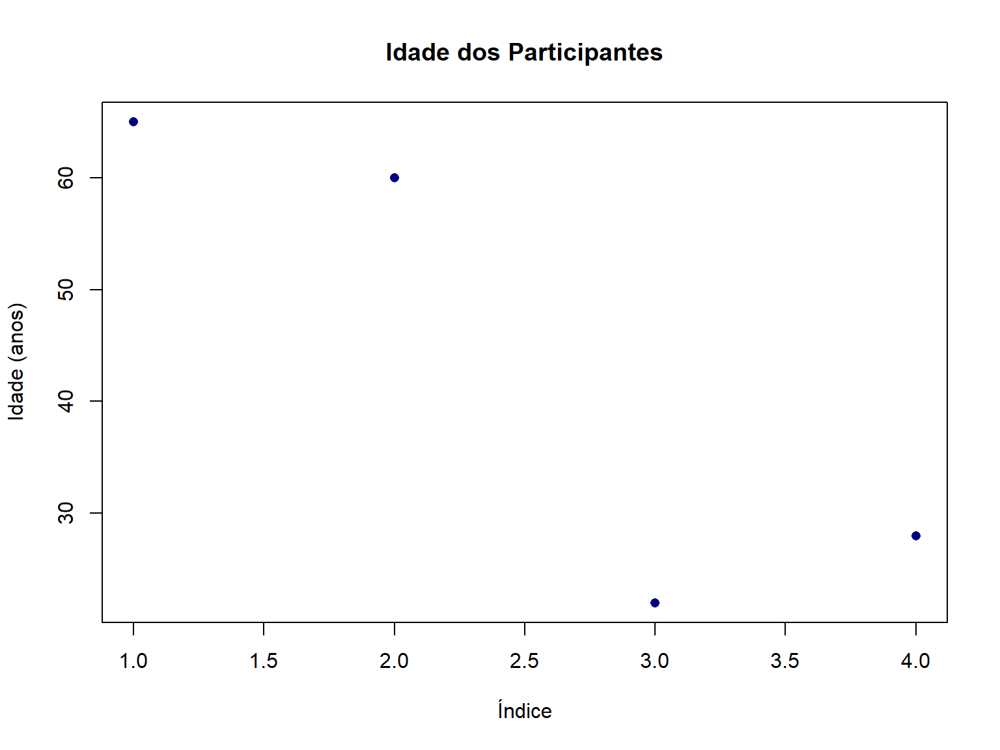
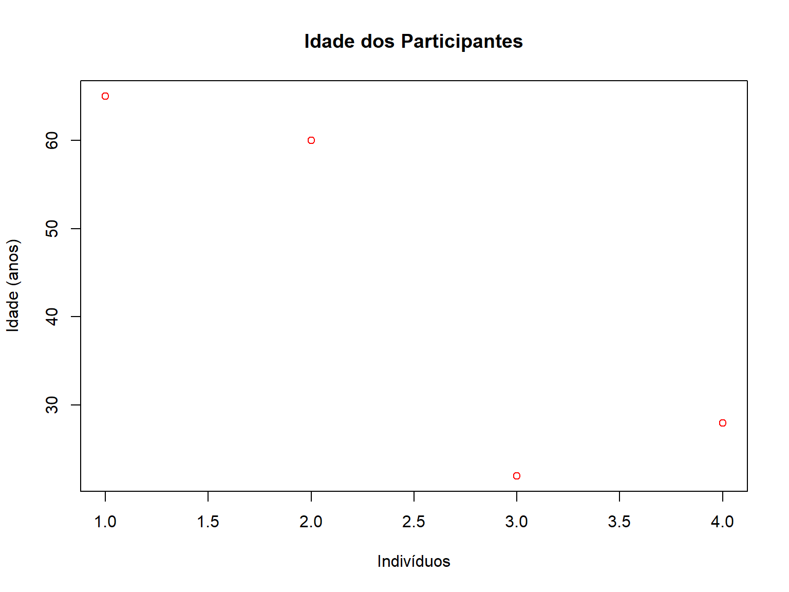
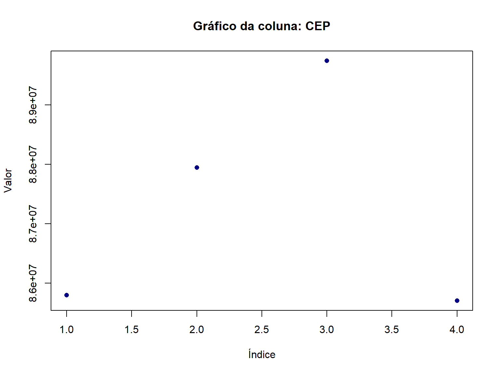
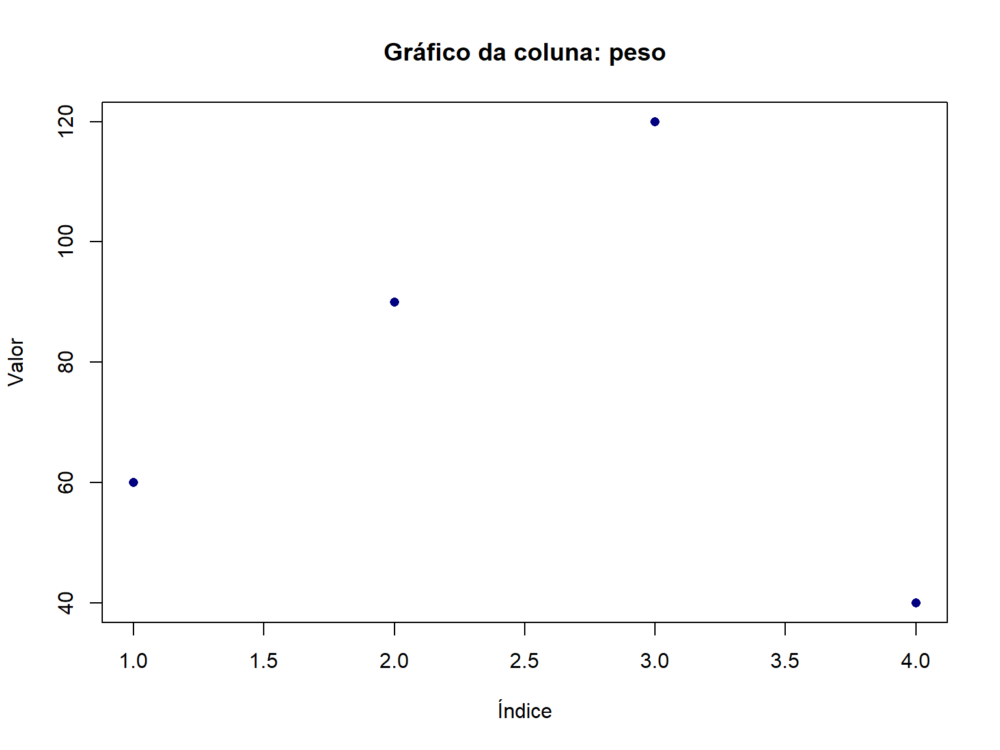

# O uso de # no início de uma linha significa uma linha de comentário
# Essa linha não é executada pelo R
# Use comentários para documentar seu código!1 Introdução ao R e RStudio
1.1 O que é o R?
O R é uma linguagem de programação e ambiente de software livre para computação estatística e gráficos. Atualmente o R se tornou uma das ferramentas mais populares para análise de dados, especialmente nas áreas de estatística, bioestatística e ciência de dados.
1.1.1 Vantagens do R
- Gratuito e Open Source: O R é completamente gratuito e possui código aberto
- Ampla Comunidade: Grande comunidade de usuários e desenvolvedores
- Pacotes Especializados: Mais de 19.000 pacotes disponíveis no CRAN para diferentes análises
- Gráficos de Alta Qualidade: Excelentes capacidades de visualização de dados
- Reprodutibilidade: Facilita a pesquisa reproduzível através de scripts
- Integração: Pode ser integrado com outras linguagens e ferramentas
1.1.2 Desvantagens do R
- Curva de Aprendizado: Pode ser desafiador para iniciantes sem experiência em programação
1.2 Interface do RStudio
O RStudio é um ambiente de desenvolvimento integrado (IDE) para R que facilita significativamente o trabalho com a linguagem. A interface do RStudio é dividida em quatro painéis principais:
-
Editor de Scripts (superior esquerdo): Onde você escreve e salva seus códigos

-
Console (inferior esquerdo): Onde os comandos são executados e os resultados aparecem

-
Environment/History (superior direito): Mostra objetos criados e histórico de comandos

-
Files/Plots/Packages/Help (inferior direito): Gerenciamento de arquivos, visualização de gráficos, pacotes e ajuda

1.2.1 RStudio Projects
Os Projects do RStudio são uma forma de organizar seu trabalho. Ao criar um projeto:
- Mantém todos os arquivos relacionados em um único diretório
- Define o diretório de trabalho automaticamente
- Preserva o histórico de comandos específico do projeto
- Facilita o controle de versão com Git
Dica: Sempre use Projects para organizar suas análises!
1.3 Primeiros Passos com R
Vamos aprender os comandos básicos do R.
1.3.1 Declarando Variáveis
No R, usamos o operador <- para atribuir valores a variáveis.
Atalho útil: Alt + - (Windows) ou Option + - (Mac) insere automaticamente <-
Para executar código: Ctrl + Enter (Windows) ou Cmd + Enter (Mac)
# Declarando variáveis simples
a <- 1
b <- 2
# Operações matemáticas
a + b # soma[1] 3a - b # subtração[1] -1a * b # multiplicação[1] 2a / b # divisão[1] 0.5a^2 # exponenciação[1] 11.3.2 Estruturas de Dados
O R possui diferentes estruturas para armazenar dados:
1.3.2.1 Vetores
Vetores são a estrutura mais simples, contendo elementos de um único tipo:
# Vetor numérico simples
a <- 1
# Vetor com múltiplos elementos
numeros <- c(1, 2, 3, 4, 5)1.3.2.2 Listas
Listas podem conter diferentes tipos de dados:
# Lista com diferentes tipos de dados
a <- list("a", 1, "b")1.3.2.3 Data Frames
O data frame é a estrutura mais importante para análise de dados - é equivalente a uma planilha do Excel.
# Criando um data frame com informações de pacientes
df <- data.frame(
Nome = c("João", "José", "Maria", "Antônia"),
Idade = c(65, 60, 22, 28),
Sexo = c("Masculino", "Masculino", "Feminino", "Feminino"),
CEP = c(85802159, 87945632, 89745632, 85706984),
Curso = c("Nutrição", "Educação Física", "Fisioterapia", "Medicina")
)
# Visualizando o resumo dos dados
summary(df) Nome Idade Sexo CEP
Length:4 Min. :22.00 Length:4 Min. :85706984
Class :character 1st Qu.:26.50 Class :character 1st Qu.:85778365
Mode :character Median :44.00 Mode :character Median :86873896
Mean :43.75 Mean :87300102
3rd Qu.:61.25 3rd Qu.:88395632
Max. :65.00 Max. :89745632
Curso
Length:4
Class :character
Mode :character
1.3.2.4 Acessando Colunas de um Data Frame
O símbolo $ é usado para acessar colunas específicas de um data frame:
# A função plot é utilizada para visualizar dados
# Plotando a idade dos participantes
plot(df$Idade)
# Podemos adicionar argumentos para uma função
plot(x = df$Idade,
main = "Idade dos Participantes", # Título dos gráficos
ylab = "Idade (anos)", # Título do eixo y
xlab = "Indivíduos", # Título do eixo x
col = "red") # Cor do gráfico
1.3.2.5 Como saber os argumentos de uma função??
??plot # F1 ajuda a ter ajuda direto1.3.2.6 Outros estilos de gráfico
boxplot(Idade ~ Sexo,
data = df,
xlab = "Sexo",
ylab = "Idade (anos)",
col = "navy")
1.3.3 Tipos de Dados no R
Compreender os tipos de dados é fundamental para trabalhar com R:
1.3.3.1 Numeric (Double)
Valores numéricos decimais:
1.3.3.2 Integer
Valores numéricos inteiros (use L para especificar):
1.3.3.3 Character
Dados de texto (strings):
1.3.3.4 Factor
Dados categóricos (nominais ou ordinais):
Fatores são essenciais para análises estatísticas com variáveis categóricas.
1.3.3.5 Logical (Booleano)
Valores lógicos TRUE (verdadeiro) ou FALSE (falso):
a <- 1
b <- 2
a == b # Retorna FALSE[1] FALSE1.3.3.6 NA (Not Available)
Representa valores ausentes em um conjunto de dados:
1.3.4 Convertendo Tipos de Dados
Vamos aplicar o que aprendemos ao nosso data frame:

1.4 Lógica de Programação no R
1.4.1 Operadores Lógicos
Os operadores lógicos são usados para realizar comparações:
| Operador | Significado |
|---|---|
== |
Igual a |
!= |
Diferente de |
< |
Menor que |
> |
Maior que |
<= |
Menor ou igual |
>= |
Maior ou igual |
# Exemplos de operadores lógicos
1 > 2 # FALSE[1] FALSE1 < 2 # TRUE[1] TRUE1 <= 2 # TRUE[1] TRUE1 >= 2 # FALSE[1] FALSE1 != 2 # TRUE[1] TRUE2 == 2 # TRUE[1] TRUEPodemos aplicar operadores lógicos a colunas inteiras:
df$Idade > 50 # Quais idades são maiores que 50?[1] TRUE TRUE FALSE FALSEdf$Idade >= 60 # Quais são idosos (>=60 anos)?[1] TRUE TRUE FALSE FALSE1.4.2 Condicionais: if, else, ifelse
1.4.2.1 Estrutura if-else
1.4.2.2 Função ifelse
A função ifelse() é útil para vetorização de condições:
# Classificando idades em adultos e crianças
idades <- c(1, 2, 3, 4, 5, 6, 7, 8, 9, 10, 21, 25, 38, 48, 54)
classificacao <- ifelse(idades >= 10, "Adulto", "Criança")
classificacao [1] "Criança" "Criança" "Criança" "Criança" "Criança" "Criança" "Criança"
[8] "Criança" "Criança" "Adulto" "Adulto" "Adulto" "Adulto" "Adulto"
[15] "Adulto" Aplicando ao nosso data frame:
# Classificando participantes como idosos ou adultos
classificacao_idade <- ifelse(df$Idade >= 60, "Idoso", "Adulto")
classificacao_idade[1] "Idoso" "Idoso" "Adulto" "Adulto"1.4.3 Manipulação de dados em um data.frame
1.4.3.1 Adicionando uma nova coluna
Podemos adicionar uma nova coluna usando o $
# Data.frame original - 5 colunas no total
df <- data.frame(Nome = c("João", "José", "Maria", "Antônia"),
Idade = c(65, 60, 22, 28),
Sexo = c("Masculino", "Masculino", "Feminino", "Feminino"),
CEP = c(85802159,87945632,89745632,85706984),
Curso = c("Nutrição", "Educação Física", "Fisioterapia", "Medicina")
)
df # Adicionando a coluna peso
df$peso <- c(60,90,120,40)
df1.4.3.2 Adicionando uma nova coluna baseado nos dados usando ifelse
A estrutura do ifelse é útil para classificar os dados.
1.4.4 Loops: Operações Repetidas
Loops são úteis para realizar operações repetidas de forma automática.
1.4.4.1 Loop for básico
# Imprimindo números de 1 a 10
for (i in 1:10) {
print(i)
}[1] 1
[1] 2
[1] 3
[1] 4
[1] 5
[1] 6
[1] 7
[1] 8
[1] 9
[1] 101.4.4.2 Loop for com condicionais
Exemplo avançado: criando gráficos automaticamente para cada coluna do data frame:
# Loop para gerar gráficos de todas as colunas
for (col in names(df)) {
if (is.numeric(df[[col]])) {
# Se a coluna for numérica, cria gráfico de dispersão
plot(df[[col]],
main = paste("Gráfico da coluna:", col),
xlab = "Índice",
ylab = "Valor",
col = "navy",
pch = 16)
} else if (is.factor(df[[col]])) {
# Se a coluna for fator, cria gráfico de barras
counts <- table(df[[col]])
barplot(counts,
main = paste("Distribuição da coluna:", col),
col = "darkred",
border = "black",
xlab = "Categorias",
ylab = "Frequência")
}
}



1.5 Boas Práticas de Formatação de Código
Escrever código limpo e legível é essencial para:
- Facilitar a manutenção e revisão do código
- Permitir que outros entendam seu trabalho
- Evitar erros e bugs
- Promover colaboração
1.5.1 Uso de Espaços
Sempre use espaços ao redor de operadores para melhorar a legibilidade:
# ✓ CORRETO - Código legível
a <- 1
a <- 1 + 2 * 3
# ✗ ERRADO - Código difícil de ler
a<-1+2*31.5.2 Formatação de Data Frames
Compare as duas formas de criar o mesmo data frame:
# ✓ CORRETO - Cada argumento em uma linha, bem espaçado
df <- data.frame(
Nome = c("João", "José", "Maria", "Antônia"),
Idade = c(65, 60, 22, 28),
Sexo = c("Masculino", "Masculino", "Feminino", "Feminino"),
CEP = c(85802159, 87945632, 89745632, 85706984),
Curso = c("Nutrição", "Educação Física", "Fisioterapia", "Medicina")
)1.5.3 Convenções de Nomenclatura
Use snake_case (minúsculas com underline) para nomear variáveis e objetos:
# ✗ ERRADO - Nome com espaço (causa erro)
tabela 1 <- 1
# ✗ ERRADO - Mistura de maiúsculas e espaço
tabelA 1 <- 1
# ✓ CORRETO - snake_case
tabela_1 <- 1
dados_pacientes <- data.frame()
modelo_final <- lm()1.5.4 Documentação com Comentários
Sempre documente seu código com comentários explicativos:
1.6 Resumo do Capítulo
Neste capítulo, você aprendeu:
- O que é o R e suas vantagens para análise de dados em saúde
- Interface do RStudio e como organizá-la com Projects
- Tipos de dados no R: numeric, integer, character, factor, logical, NA
- Estruturas de dados: vetores, listas e data frames
- Operadores lógicos e como usá-los para comparações
- Condicionais com if-else e ifelse
- Loops para automatizar tarefas repetitivas
- Boas práticas de formatação e documentação de código
No próximo capítulo, você aprenderá a manipular dados de forma eficiente usando o pacote tidyverse, uma das ferramentas mais poderosas do ecossistema R.
1.7 Exercícios Práticos
Crie um data frame com dados de 10 pacientes, incluindo as seguintes variáveis: nome, idade, peso, altura e diagnóstico
Calcule o IMC (Índice de Massa Corporal) de cada paciente usando a fórmula: IMC = peso / altura²
Use
ifelse()para classificar os pacientes em: “Baixo peso” (IMC < 18.5), “Normal” (18.5 ≤ IMC < 25), “Sobrepeso” (25 ≤ IMC < 30), ou “Obesidade” (IMC ≥ 30)